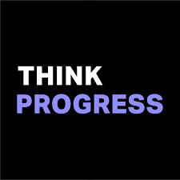
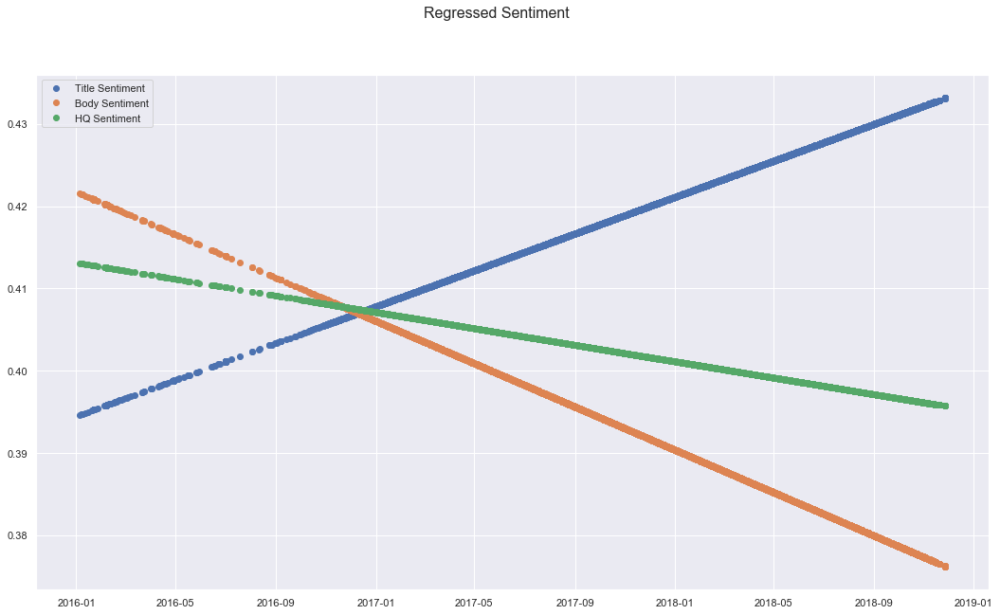
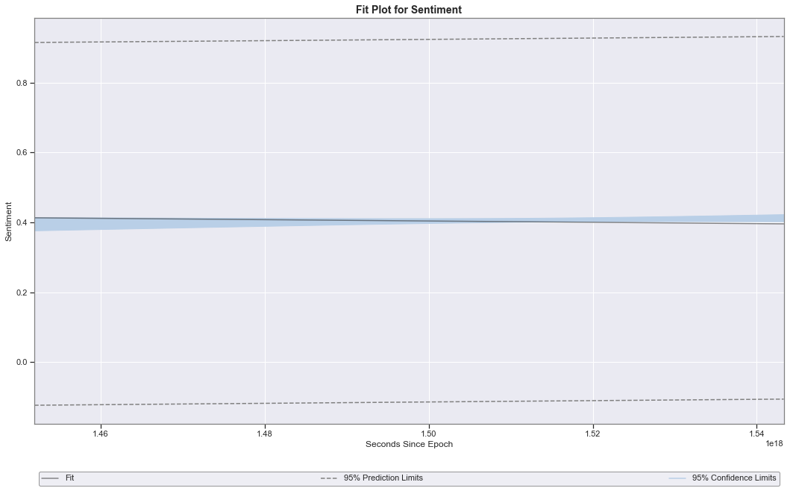
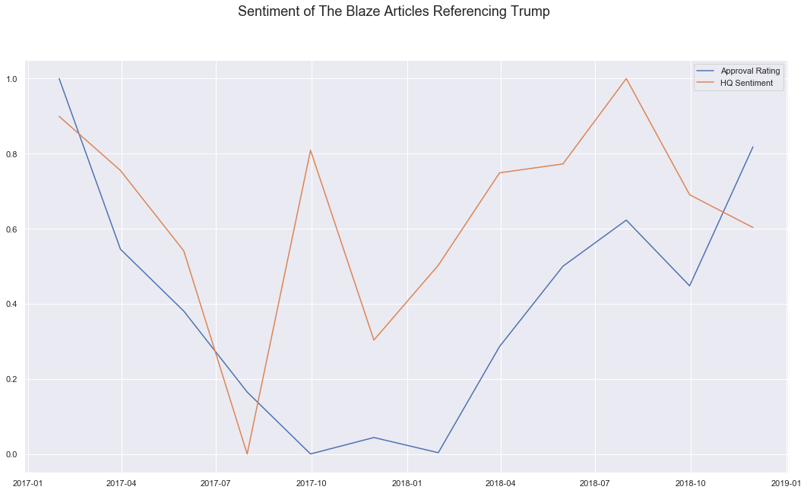
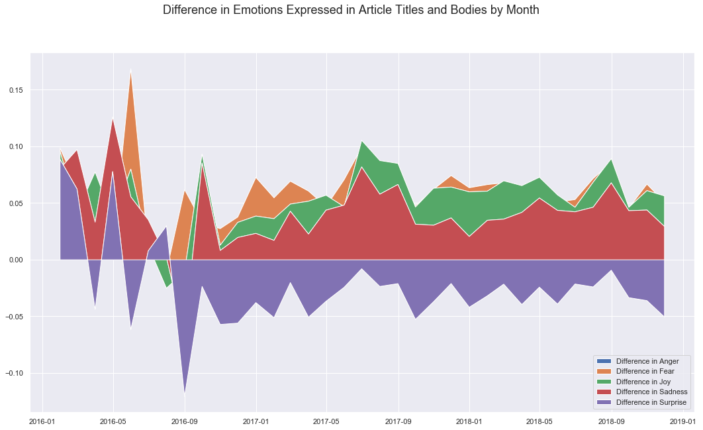
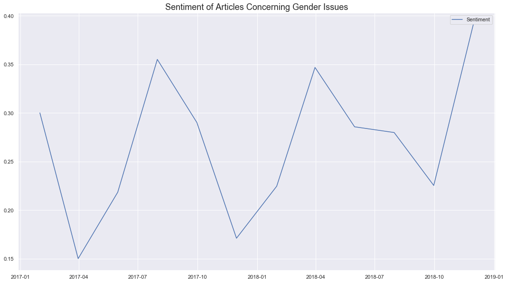

Overview
According to Gallup polls, 45% of Americans see “a great deal of bias” in the current news media. For reference, that number was 25% in 1989. With numbers like it’s easy to see that the concept of “fake news” is relevant to many Americans, but how can we measure bias in the media?
Sites like mediabiasfactcheck.com try to examine the bias of various news outlets and report on their findings. They use a variety of methods including identifying biased wording, story choices, and factuality. There are a few other sites with different methodologies, but the reality of social media echo-chambers means that their impact is negligible.
In this report I will examine articles from two biased news sites. theblaze.com is a conservative news platform founded by Glenn Beck. On the liberal side, thinkprogress.org is a progressive political news blog run by the Center for American Progress. Both of these sites are near the extreme end of their respective political biases, and they both often have their content go viral on social media. This makes them a perfect couple for analyzing the issue of media bias.
 mediabiasfactcheck.com
mediabiasfactcheck.com

mediabiasfactcheck.com
Data Collection
View the Notebooks
The Blaze
To collect data from theblaze.com articles, I took advantage of Wordpress’s predictable archival URL structure. A list of all the articles published in a day is available at theblaze.com/news/[year]/[month]/[day]. I was able to iterate through the dates to collate a list of article URLs to scrape. I then iterated over this list and used python’s BeautifulSoup to extract my data from the html.
Think Progress
Data collection for thinkprogress.org was much easier than the Blaze. I located the site’s RSS feed URL, and fed it into Python feedParser. Using the Wayback Machine from archive.org, I accessed historical RSS feed copies. The availability of the RSS feed allowed me to directly extract variables without needing to parse HTML.
Variables
At the end of the process, I had the following variables for both sites:
- Article Title
- Article Body
- Article Author
- Article Published Date
- Article URL
- Article Site
Data Cleaning
View the Notebook
Encoding
After collecting the data from both sites, I needed to clean the text to ensure maximum performance from sentiment analysis and topic modeling. The first step was to remove or convert the plethora of unicode characters that were in the article bodies. I used unicodedata.normalize() to extract ASCII text from the article bodies.
Data Types
Next, I had to ensure that the datatypes were correctly interpreted in the data-frame, as they were mostly represented by strings in the original database. I converted author and site to categorical variables, and article published timestamp to date-time.
Metadata
Finally, I constructed two metadata fields: Body Length in Characters, and Title Length in Characters. It was important to have these fields because many of the APIs for sentiment and topic modeling charge by 100 characters. It was also important to be able to estimate the time to compute a model locally if I decided to do so.
Text Processing
View the Notebooks
Most of the data that I scraped is next to useless on its own. I needed to add more information to the dataset in order to make any visualizations or conclusions.
Basic Sentiment with Vader
I have very little experience in text-processing machine learning. Therefore, I decided that the best place to start would be an easy-to-use pre-trained model. It seems that the Vader model from the Natural Language Toolkit is widely used and accepted. I used the Text-Blob package to create a nice wrapper around the model, and was able to add the following columns:
- Title Polarity
- Title Subjectivity
- Body Polarity
- Body Subjectivity
indico.io Models
I needed a better sentiment model in my dataset, but I didn’t want to spend countless hours training custom models on my local machine. After some deliberation, I decided that I would use a pre-trained sentiment analysis API. I’ve used Google Cloud ML and Amazon Comprehend before, but their pricing structure is geared towards live applications. Ultimately I decided to try the apis on indicio.io. They have great reviews, and good academic discounts. (Luckily for me they were offering free API usage as recompense for previous outages.) Using their python wrapper, I added the following columns:
- Title Sentiment
- Body Sentiment
- HQ (combined) Sentiment
- Title Political Lean
- Body Political Lean
- Title Emotion
- Body Emotion
- People Referenced
- Places Referenced
- Organizations Referenced
- Keywords
- Text Tags
Data Analysis
View the Notebook
With all of the grunt work out of the way, I began my analysis. The following are the questions I asked, the visualizations I used, and the conclusions I reached.
Is News Getting More Negative?
It seems that the news these days has been getting more and more negative. With the wide variety of available news sources, those with the most shocking stories often profit. I set out to test this hypothesis: Is news getting more negative? Using matplotlib, I created some visualizations to help identify trends.
 All articles' sentiment, averaged by month.
All articles' sentiment, averaged by month.
There are some interesting relationships in this plot of monthly sentiment, but the resolution is too high to identify any real trends.
All articles' sentiment, averaged by every two months.
The lower resolution on this plot makes it easier to identify that there is a visible, non-linear downward trend in sentiment.
 All articles' sentiment, averaged by every three months.
All articles' sentiment, averaged by every three months.
The even lower resolution on this plot shows that there has actually been a recent increase in article sentiment. While there is still a visible downward trend, this is not consistant throughout the plot.

All articles' predicted sentiment, modeled by OLS linear regression.
When a simple linear model is applied to the sentiment variables, a trend is much more visible. I'll test the significance and confidence of this model in the next plot.
Assuming that the model is valid and significant, it appears that the sentiment of the title is increasing, while the body sentiment and sentiment overall are decreasing. It is also worth noting that the y-axis is very zoomed in on the regression. The change is less than .05 for all of the lines.

All articles' sentiment model fit, modeled by OLS linear regression.
This plot shows the confidence limit and prediction interval for the linear model.
The plot shows that the 95% confidence fit for the sentiment is not a significant slope. The decrease in the fitted sentiment is less than .02, and the confidence interval is actually showing an upward slope.
Findings
- The sentiment of biased news is highly variable over time.
- The sentiment of biased news is not linear over time.
- The sentiment of biased news titles is slightly increasing over time.
- The sentiment of biased news bodies is slightly decreasing over time.
- The average sentiment of biased news articles is not changing significantly over time
Do the Sentiments of Articles about Trump Reflect His Approval Rating?
President Donald Trump is on of the hottests topics of discussion in news, biased news included. In order to understand how the content of biased news articles interacts with his approval rating, will test the following:
Do the sentiments of articles talking about Trump reflect his approval rating in any way, and how is the sentiment of the two sites different on this issue?
I got approval rating information from the American Presidency Project here. Using this data and matplotlib, I created some visualizations to help identify trends.
 The sentiment of all articles referencing Donald Trump, averaged by month.
The sentiment of all articles referencing Donald Trump, averaged by month.
This plot shows the combined sentiment of article titles and bodies by month, as well as Trump's month approval rating. Both variables were normalized from 0-1 for scale.
It seems that there is little correlation between the approval rating and sentiment lines. At some points in the plot, the variables appear to increase similarly. However, there are just as many times that the lines move in an inverse manner.
Maybe this is a result of both liberal and conservative articles sharing a variable. I'll plot the sites individually to compare.
 The sentiment of all Think Progress articles referencing Donald Trump, averaged by 2 months.
The sentiment of all Think Progress articles referencing Donald Trump, averaged by 2 months.

The sentiment of all The Blaze articles referencing Donald Trump, averaged by 2 months.
The sentiment of both sites' articles referencing Donald Trump, averaged by 2 months.
It looks like there are many similarities in the movement of the article and approval lines. However, there are also many differences. If the sentiments were transformed somehow, or fed into a more complex model, there may be higher correlation.
Checking for Other Potential Correlations
 The correlation matrix of variables in Think Progress articles referencing Donald Trump.
The correlation matrix of variables in Think Progress articles referencing Donald Trump.
The most correlated variables with Trump's approval rating are: Sentiment(.24), Date(.27), and Libertarian Lean(.29)
 The correlation matrix of variables in The Blaze articles referencing Donald Trump.
The correlation matrix of variables in The Blaze articles referencing Donald Trump.
The most correlated variables with Trump's approval rating are: Sentiment(.35), Conservative Lean(.28), Liberal Lean(.32), and Libertarian Lean (-.34).
 The correlation matrix of variables in all articles referencing Donald Trump.
The correlation matrix of variables in all articles referencing Donald Trump.
The most correlated variables with Trump's approval rating are: Sentiment(.37), Conservative Lean(.25), and Date(.23).
Findings
- The sentiment of biased news does not correlate very well directly with Trump's approval rating.(.37)
- The sentiment of biased news over time does share most of the general shape of Trump's approval rating, suggesting that it could be significant in a model or after transformation.
- Think Progress articles with Libertarian lean correlate higher with Trump's Approval rating. This is interesting, considering that it is a progressive site.
- The Blaze articles with Conservative and Liberal Lean correlate higher with Trump's approval rating, but those with Libertarian lean correlate negatively.
- Overall, articles with Conservative lean correlate higher with Trump's approval rating.
Clickbait!? Do Article's Titles Express More Emotion Than Their Bodies?
Clickbait is when titles or summaries of articles are designed to entice users to read. Headlines are often exaggerated, sensationalized, and sometimes downright false.
Like many other entertainment sources, politically biased news sites often employ clickbait tactics to drive readership.
By exploring the relationship between sentiment and emotion in articles' titles and bodies with plots, I hope to identify quantifiable characteristics of politically biased clickbait.
 Emotions Expressed in Article Titles by Month
Emotions Expressed in Article Titles by Month
Emotions Expressed in Article Bodies by Month

Difference in Emotions Expressed in Articles by Month (Title-Body)
This plot shows that most emotions do not appear in the title of articles more than the body. The exception to this is surprise, which almost always appears more in the title than body. This makes sense, as biased news sources often sensationalize.
 Difference in Emotions Expressed in Articles by Month (Title-Body)
Difference in Emotions Expressed in Articles by Month (Title-Body)
Plotting the same data as the previous figure in a line plot allows for more detailed analysis of the trends. Previously, the difference in fear was not visible. Now we know that it is the most significant.
This plot shows that the difference in emotion is most significant with Anger, Sadness, and Surprise.
Histogram of Difference in Emotions Expressed in Articles (Title-Body)
This histogram shows that the majority of emotion differences fall within a normal distribution, suggesting that there is not significant difference in overall emotionality.
 Difference in Emotions Expressed in Think Progress Articles by Month
Difference in Emotions Expressed in Think Progress Articles by Month
Difference in Emotions Expressed in The Blaze Articles by Month
Findings
- Biased news articles tend to have more anger in their titles than bodies.
- Biased news articles also tend to have more surprise in their titles than bodies
- Biased news articles tend to have much less sadness in their titles than their bodies.
- The total difference in emotion between titles and bodies is not significant
- There is not a significant difference in sentiment defecit between The Blaze and Think Progress.
Is the Sentiment or Emotion of an Article Correlated with its Policial Lean?
Both sites in my dataset are pretty extreme, so it will be interesting to see the results of these graphs.
I have no prediction as to how sentiment and political lean will interact. Ideally, the following plots will provide enough evidence to support findings.
I will first examine the emotion and sentiment of the two sites, and then explore the effects of political lean.
The ratio of emotions expressed in Think Progress articles.
 The ratio of emotions expressed in The Blaze articles.
The ratio of emotions expressed in The Blaze articles.
There is negligible difference between the ratios of emotions observed on the two sites. The largest change is in anger, which is 4% higher on Think Progress. All other changes combined add up to 4.5%
 The histogram of sentiment in Think Progress articles.
The histogram of sentiment in Think Progress articles.
The histogram of sentiment in The Blaze articles.
Both Think Progress and The Blaze have very right-skewed histograms for sentiment. Due to the severity of the deviation of the skew from a normal distribution, it's safe to say that the sites both have mostly negative content.
However, the two sites' sentiment histograms are not identical. The Blaze's histogram is basically flat at a .75 density at .35 and above. Think Progress almost gets down to .5 density at .5 sentiment, but then it gets back up past 1 density at 1.0 sentiment, forming what looks like a bimodal distribution.
The net result is a small difference in measures of central tendency, but a large qualitative difference.
The Policial Lean of Articles by Sentiment
This plot shows a pretty clear negative relationship between conservative lean and sentiment, and a positive one with grean lean and sentiment.
Libertarian and Liberal lean have no visibly identifiable trendline.
 The Linear Regressed Policial Lean of Articles by Sentiment
The Linear Regressed Policial Lean of Articles by Sentiment
As I suspected from the previous plot, there are two very strong relationships.
Green lean is highly correlated with article sentiment, and Conservative lean is very negatively correlated.
The other two leans have a very slight negative correlation.
The Ratio of Political Lean by Sentiment Quartile
This plot tells pretty much the same story as the last. Green increases with sentiment, and Conservative decreases.
Findings
- The emotions expressed on Think Progress and The Blaze are very similar.
- The sentiment density of Think Progress appears to have a minor bimodal distribution, while The Blaze's is right skewed, but mostly flat. This means that The Blaze has more articles with a moderate sentiment, and Think Progress has more articles at the extremes.
- The more Green political lean expressed in a article, the higher the sentiment.
- The more conservative sentiment expresses in an article, the lower the sentiment.
- The most positive quarter of articles have 27.9% Liberal Lean, 26.3% Green Lean, 25% Libertarian Lean, and 20.8% Conservative Lean.
On the Issues: What is the Sentiment of Articles about Issues from Right and Left-Wing sites?
There were many issues that I didn't have the time or data to do a robust analysis on, but I didn't want to omit them completely.
I decided the best route would be to include sentiment histograms, sentiment time plots, and a quick and dirty analysis for each issue.
|
|
|
| Issue |
Histogram |
Plot |
Histogram |
Plot |
Analysis |
| The Enviroment |
|
|
|
|
|
| Gender Issues |
 |
 |
|
|
|
| The Economy |
|
|
 |
 |
|
| Guns |
 |
 |
|
|
|
| Education |
 |
 |
 |
|
|
| Religion |
 |
|
 |
 |
|